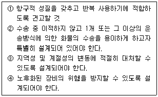
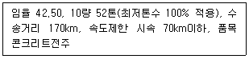

철도운송산업기사 (2009-05-10 기출문제)
1과목: 여객운송
1. 승차권의 유효성에 대한 설명으로 가장 거리가 먼 것은?
- KTX자유석승차권은 승차권에 표시된 출발역 출발시각 앞뒤 1시간(당일 중에 한함) 이내에 출발하는 열차에 사용 가능하다.
- 모바일승차권은 철도공사의 전산시스템에 접속하여 휴대폰으로 운송에 관한 정보를 전송받은 사람이 사용 가능하다.
- 자가인쇄승차권의 경우에는 승차권에 승차자로 표시된 사람이 사용 가능하다.
- 청소년 정기승차권 이용자가 유효기간 중에 만 26세를 초과하는 경우라도 유효기간 종료일까지 사용할 수 있다.
(정답률: 알수없음)

2. 여객운송 계약에 대한 설명으로 가장 거리가 먼 것은?
- 후급결제에 관한 계약을 체결한 경우에는 운임·요금을 정산한 때를 운송계약 성립시기로 본다.
- 여객운송 계약은 운송인이 여객의 운송을 인수할 것을 약속하는 계약이다.
- 여객운송 계약의 법적 성질은 부합계약이다.
- 여객운송 계약은 여객의 운송을 목적으로 한다.
(정답률: 알수없음)
3. 다음 설명 중 가장 옳은 것은?
- 입장권은 발매역에서 입장권에 표시된 지정열차에 1회에 한하여 사용할 수 있으며 사용하지 않은 입장권은 반환한다.
- 새마을호 열차가 도착역에 1시간 30분 지연도착하였을 경우 소지한 승차권 운임의 50%를 지연보상금으로 지급한다.
- 정기승차권 사용자가 열차에서 신분증 제시를 거부하여 부가운임을 지급한 경우 승차일로부터 1개월 이내에 정당신분증 및 영수증을 제출하고 최저수수료를 공제한 잔액을 반환받을 수있다.
- Korail Membersip카드로 구입시 제공 받은 포인트는 제공 받은 월을 기준으로 5년간 유효하며 5년이 경과한 포인트는 월 단위로 매월 말 자동 소멸된다.
(정답률: 알수없음)
4. 다음 설명 중 가장 거리가 먼 것은?
- 우편배송 취소는 우편배송 신청 후 1시간 이내에만 인터넷으로 취소가 가능하다.
- Home-Ticket의 미인쇄, 훼손, 분실 재발행은 역 창구에 한하여 가능하다.
- KTX 할인카드로 새마을·무궁화를 이용하는 경우 할인카드 기본할인율을 적용한다.
- KR PASS 교환권의 E-Ticket 발행은 철도공사 영문 홈페이지에서 예약하고 예약일로부터 60일 이내에 신용카드로 결제한 후 본인이 직접 발행한다.
(정답률: 알수없음)
5. A역에서 B역까지 KTX열차 특실로 어른 3명, 어린이 1명, 장애인(4급) 1명이 여행할 경우 수수할 운임·요금은 얼마인가? (단, 기준운임 47900원, 승차일 화요일, 좌석속성 미적용일 경우)
- 257500원
- 287500원
- 297100원
- 311500원
(정답률: 알수없음)
6. 한국철도공사 영업할인에 대한 설명으로 가장 거리가 먼 것은?
- 정기승차권의 일반인 1개월용은 1일 2회 사용이 가능하며 할인율은 50%이다.
- 승차권 자동발매기(ATIM)로 승차권 구입시 다른 할인과 중복하여 운임의 1%를 추가로 할인하여 준다.
- 할인카드로 구입한 승차권으로 열차 내에서 승차 구간을 연장시 운임할인을 적용한다.
- 단체승차권은 10명 이상만 가능하며 운임의 10%를 할인하여 준다.
(정답률: 알수없음)
7. 철도안전법에서 정한 벌칙 및 과태료에 대한 설명으로 틀린 것은?
- 폭행·협박으로 철도종사자의 직무집행을 방해하여 열차운행에 지장을 일으키게 한 자는 그 죄에 정한 형의 2분의 1까지 가중한다.
- 철도차량운전·관제업무 등에 종사하는 철도종사자가 술을 마시거나 마약류를 사용한 상태에서 업무를 수행한 자는 2년 이하의 징역 또는 2천만원 이하의 벌금에 처한다.
- 여객열차안에서 정당한 사유 없이 운행중에 비상정지버튼을 누른 경우 1천만원 이하의 과태료에 처한다.
- 여객열차안에서 정당한 사유없이 국토해양부령이 정하는 여객출입금지장소에 출입한 자는 2천만원 이하의 벌금에 처한다.
(정답률: 알수없음)
8. A역에서 B역간 새마을호 특실을 어른 1명이 Home-Ticket으로 열차출발 2일 전에 발권하여 열차 출발 당일 열차 출발 1시간 전에 인터넷으로 반환할 경우 반환금액은 얼마인가? (단, 기준운임 39300원, 촤석속성 미적용, 최저수수료 400원일 경우)
- 40000원
- 40700원
- 44000원
- 44800원
(정답률: 알수없음)
9. 여객운송 계약에 있어서 당사자의 합의만으로 성립하는 계약으로 계약 당사자 사이에 의사표시가 일치하기만 하면 성립하고 그 밖에 다른 형식이나 절차를 필요로 하지 않는 계약은?
- 쌍무계약
- 낙성계약
- 유상계약
- 부종계약
(정답률: 알수없음)
10. 운임할인 대상자임을 확인할 수 있는 신분증을 소지하지 않아 부가운임을 지급한 경우 소정의 자료를 제출하고 몇 일 이내에 부가운임의 반환을 청구할 수 있는가?
- 승차일로부터 7일 이내
- 승차일로부터 1개월 이내
- 도착일로부터 7일 이내
- 도착일로부터 1개월 이내
(정답률: 알수없음)
11. 여객운송계약의 법적 성질에 대한 설명으로 가장 거리가 먼 것은?
- 계약 당사자의 일방이 정한 정형적 약관에 대하여 사실상 상대방이 포괄적으로 승인할 수 밖에서 없는 계약을 부합계약이라고 한다.
- 계약당사자가 상호 간에 대가로서의 의의를 가지며 경제적 부담을 하는 계약을 유상계약이라 한다.
- 당사자의 합의만으로 성립하는 계약으로 계약 당사자 사이에 의사표시가 일치하기만 하면 성립하고 그 밖에 다른 형식이나 절차를 필요로 하지 않는 계약을 낙성계약이라 한다.
- 운송, 수도, 가스, 보험, 전기 계약은 오늘날 쌍무계약으로 행하여 지고 있다.
(정답률: 알수없음)
12. 다음 중 승차권 반환에 대한 설명으로 맞는 것은?
- 자가발권승차권은 열차출발시각 1시간 전까지만 인터넷을 이용하여 반환청구 할 수 있다.
- 열차출발 1일 전부터 출발 1시간 이전까지 역에서 반환하는 경우 수수료는 영수액의 10%이다.
- KR PASS의 VOUCHER는 구입한 판매여행사에서 발행일부터 6개월 이내 철도공사와 판매대행사가 협의하여 정한 수수료를 공제한 잔액을 반환한다.
- 연계이용권의 선행교통편 출발 후 후행교통편 출발시각 이전까지의 반환수수료는 영수금액의 10%이다.
(정답률: 알수없음)
13. 철도사업법에 대한 설명으로 가장 거리가 먼 것은?
- 철도사업에 관한 질서를 확립하고 효율적인 운영 여건을 조성함으로써 철도사업의 건전한 발전과 철도이용자의 편의를 도모하여 국민경제의 발전에 이바지함을 목적으로 한다.
- 철도사업자는 운임·요금을 정하거나 변경함에 있어서 원가와 버스 등 다른 교통수단의 운임·요금과의 형평성 등을 고려하여 기획재정부장관에게 신고하여야 한다.
- 철도사업자는 열차를 이용하는 여객이 정당한 승차권을 소지하지 아니하고 열차를 이용한 경우에는 승차구간에 상당하는 운임 외에 그의 30배의 범위 안에서 부가운임을 징수할 수 있다.
- 철도사업자는 재해복구를 위한 긴급지원, 여객유치를 위한 기념행사, 그 밖에 철도사업의 경영상 필요하다가 인정되는 경우 운임·요금을 감면할 수 있으며 그 시행 3일 이전에 감면사항을 인터넷홈페이지, 관계 역·영업소 및 사업소 등에 게시하여야 한다.
(정답률: 알수없음)
14. 정기승차권에 대한 설명으로 맞는 것은?
- 유효기간에 따라 15일용, 1개월용, 3개월용으로 이용대상에 따라 청소년용과 일반용으로 구분한다.
- 법정공휴일이 포함한 주중(월~금)에 한하여 사용하며 일반인용 1개월 정기승차권의 할인율은 50% 이다.
- 정기승차권 분실 재발행 청구시 발행내역을 확인할 수 있는 경우 최저수수료를 받고 2회에 한하여 재발행 한다.
- 정기승차권에 표시된 승차구간을 지나 계속 여행하는 경우 추가로 승차하는 구간에 대하여 기준운임·요금을 별도로 받는다.
(정답률: 알수없음)
15. A역에서 B역간 KTX열차로 어른 4명이 동반석을 이용하여 B역에 50분 늦게 도착하였을 경우 지연보상금액은 얼마인가? (단, 기준운임 38400원일 경우)
- 38400원
- 24000원
- 19200원
- 12000원
(정답률: 알수없음)
16. 여객운송약관에 정한 용어의 설명으로 틀린 것은?
- 휴대폰문자승차권 및 자가인쇄승차권은 자가발권승차권이라 한다.
- 간이역이라 함은 철도공사에서 승차권 발권서비스를 제공하지 않거나 열차 승무원이 승차권을 발권하는 역을 말한다.
- 운임구역이라 함은 승차권 또는 입장권을 소지하고 출입하여야 하는 구역으로 표확인기기 바깥쪽, 타는 곳, 열차내를 말한다.
- 환승이라 함은 연속되는 승착간의 도중역에 도착한 시각의 10분 내지 50분(철도공사가 정한 열차시각 기준) 이내에 다른 열차로 갈아타는 것을 말한다.
(정답률: 알수없음)
17. KTX 승차권을 구입시기와 승차 일에 따라 할인하는 할인율로 틀린 것은?
- 열차출발 14일 전부터 ~ 7일 전까지 일요일 : 운임의 3.5% 할인
- 열차출발 6일 전부터 ~ 1일 전까지 평일 : 운임의 3.5% 할인
- 열차출발 2개월 전부터 ~ 30일 전까지 공휴일 : 운임의 10% 할인
- 열차출발 29일 전부터 ~ 15일 전까지 평일 : 운임의 15% 할인
(정답률: 알수없음)
18. 승차권의 예약, 결제, 취소에 대한 설명으로 가장 거리가 먼 것은?
- 승차권 예약 발권은 출발 2개월 전 07:00부터 출발 30분 전까지 접수한다.
- 열차출발 2일 이전에 예약한 승차권은 예약한 날 다음날 24:00까지 결제하여야 한다.
- 예약한 승차권은 간이역, 무임승차권은 승차권판매대리점에서 발권하지 아니한다.
- 승차권을 예약한 사람이 출발시각이전까지 예약한 승차권을 발권받지 않는 경우 승차권 1매당 취소수수료는 결제금액의 15% 이다.
(정답률: 알수없음)
19. 다음 설명 중 맞는 것은?
- 운임을 받지 않고 운송하는 만 4세 미만의 유아는 보호자가 승차권을 결제한 때 운송계약이 성립된다.
- 철도공사는 승차권을 예약(결제 포함)한 사람이 인터넷 등의 통신매체를 이용하여 자가발권승차권의 발권을 요구하는 경우 운송에 필요한 정보를 전송하며 전송을 완료한 시각을 발권시각으로 한다.
- 철도공사는 철도이용자가 예약(또는 결제)한 승차권을 출발시각 3분전까지 발권받지 않는 경우에은 운송을 거절할 수 있다.
- 철도공사는 출발시각 이전에 승차일시·구간·차실 등의 운송조건을 바꾸기 위하여 소지한 승차권을 역(간이역제외)에 제출하고 취소 또는 반환받은 후 새로운 승차권을 구입하는 경우 수수료를 감면할 수 있다.
(정답률: 알수없음)
20. 도시철도법에서 정하고 있는 도시철도운영자는 도시철도의 운임을 정하거나 변경할 때 누구에게 신고하여야 하는가?
- 국토해양부 장관
- 기획재정부 장관
- 시·도지사
- 철도공사 사장
(정답률: 알수없음)
2과목: 화물운송
21. 철도화물운송약관에서 규정하고 있는 화물의 운송기간에 대한 설명으로 가장 적절한 것은?
- 화물의 발송기간은 화물을 수탁한 시각부터 34시간
- 열차지정 화물의 운송기간은 지정열차 도착역 도착시각부터 10시간까지로 한다.
- 수송기간은 컨테이너를 포함하여 500km 까지 마다 24시간
- 인도기간은 도착역에 도착한 시각부터 하화 완료 때까지 24시간
(정답률: 알수없음)
22. 국제표준호기구(ISO) 및 우리나라 관세청 고시에서 규정하고 있는 컨테이너의 수송용기로서의 조건을 나열한 것이다. 옳은 것만으로 짝지어진 것은?

- ①, ③
- ②, ④
- ①, ②
- ②, ③
(정답률: 알수없음)
23. 다음 중 복합운송의 요건이 아닌 것은?
- Through Rate
- Multi Mode
- Single Carrier's Liability
- Through Term
(정답률: 알수없음)
24. 철도사업법에서 정하고 있는 용어의 정의에 대한 설명으로 가장 적절한 것은?
- “철도사업”이라 함은 다른 사람의 수요에 응하여 철도차량을 사용하여 무상으로 여객이나 화물을 운송하는 사업을 말한다.
- “철도운수종사자”라 함은 철도차량과 관련하여 관제업무 및 승무·역무서비스를 제공하는 직원을 말한다.
- “철도사업자”라 함은 한국 철도공사법에 의하여 설립된 한국철도공사 및 국토해양부장관의 철도사업 면허를 받은 자를 말한다.
- “전용철도운영자”라 함은 국토해양부장관에게 전용철도면허를 받은 자를 말한다.
(정답률: 알수없음)
25. TAR(아시아횡단철도)가 제기능을 발휘하기 위해서는 궤간의 차이를 극복하여 공동운행이 가능하도록 하는 것이 우선 과제이다. 다음 중 광궤(1676mm)를 적용하는 국가가 아닌 것은?
- 파키스탄
- 스리랑카
- 인도
- 이란
(정답률: 알수없음)
26. 다음 중 ICD에 대한 설명으로 가장 적절한 것은?
- ICD는 항만 또는 공항에 고정설비를 갖추고 컨테이너의 일시적 저장과 취급에 대한 서비스를 제공한다.
- ICD는 항만에서 이루어져야 할 마샬링기능·장치보관기능·집하분류 등과 같은 전통적인 항만기능을 수행한다.
- ICD는 내륙의 컨테이너기지보다는 내륙통관기지의 의미로 주로 사용되고 있다.
- ICD는 항만지역에 위치한 많은 관련 서비스시설을 포함하고 있기 때문에 내륙항만이라고 불리기도 한다.
(정답률: 알수없음)
27. 유럽국가에서 적용되고 있는 열차종류에 따른 서비스 형태로 철도역 또는 터미널에서의 화차조성 비용을 줄이가 위하여 화차 수와 타입이 고정되며 출발지~목적지~출발지를 연결하는 루프형 구간에서 서비스를 제공하는 열차를 무엇이라고 하는가?
- Block Train
- Y-Shuttle Train
- Suttle Train
- Single-Wagon Train
(정답률: 알수없음)
28. 화물운송에 대한 설명으로 가장 적절하지 않는 것은?
- 화물운송은 생산과 소비를 연결하는 물류의 중요한 역할을 수행하고 있다.
- 운송이란 재화의 공간적 이동에 의한 가치를 창조하는 물류의 한 분야로서 물류비의 증가로 생산비용을 증가시킨다.
- 운송이란 운송수단을 이용하여 유료 또는 무료로 승객이나 화물을 한 지역에서 다른 지역으로 운반하는 물리적 행위를 말한다.
- 화물운송의 수요는 재화에 대한 파생적 수요에 해당한다.
(정답률: 알수없음)
29. 철도역에서의 컨테이너 하역방식에 대한 설명으로 적절하지 않는 것은?
- 플랙시 밴은 고속운송과 컨테이너를 결합하고 하역작업시간을 단축함과 동시에 운전에서 운전까지의 철도운송을 가능하게 하는 방식을 말한다.
- 캥거루방식은 세미트레일러를 특수 철도대차에 싣고 수송하는 방식이다.
- 매달이 싣는 방식은 COFC방식의 일종으로 트랜스퍼크레인을 이용하여 철도화차에 신속하게 상하차작업을 수행하는 방식이다.
- 피기백 방식은 화물자동차의 기동성과 철도의 장거리, 신속성을 결합한 복합운송방식이다.
(정답률: 알수없음)
30. A역에서 B역(해당선구간 최고속도 100km/h)까지 다음과 같은 조건을 경우 전세열차 운임은?

- 6762000원
- 6768000원
- 9016000원
- 9017000원
(정답률: 알수없음)
31. 위험물 철도운송규칙(국토해양부령 제452호)에서 정하고 있는 위험물 탁송 및 운송에 대한 설명으로 가장 적절하지 않는 것은?
- 위험물은 도착 정거장까지 직통하는 열차로 운송하는 것이 원칙이다.
- 직통열차가 없는 경우에는 운행시간이 이르거나 주요역에 정차하는 열차로 운송해야 한다.
- 철도운영자가 위험물을 위험물운송전용화차 또는 유개(有蓋)화차로 운송하여야 한다.
- 철도운영자가 위험물의 안전한 운송을 위하여 탁송인이 운송을 의뢰한 내용과 운송하는 내용이 일치하는지의 여부를 확인하여야 한다.
(정답률: 알수없음)
32. 컨테이너 하역시스템의 종류에 속하지 않는 방식은?
- 샤시방식
- 스트래들 캐리어방식
- 포크리프트방식
- 트랜스테이너방식
(정답률: 알수없음)
33. 철도의 컨테이너 하역방식 중 COFC(Container on Flat Car)방식이 아닌 것은?
- 지게차에 의한 방식
- 캥거루 방식
- 매달이 싣는 방식
- 플랙시 밴
(정답률: 알수없음)
34. 화물운송약관에서 규정하고 있는 운송책임 및 손해배상에 대한 설명으로 가장 적절하지 않는 것은?
- 철도공사의 명백한 원인행위로 인한 손해를 제외하고 수취시 이미 수송용기가 밀폐된 컨테이너화물 등의 내용물에 대한 손해는 철도공사는 책임을지지 않는다.
- 철도공사는 호송인이 승차하는 경우 고객의 탁송화물에 대하여 보호·관리책임을 지는 경우가 있다.
- 화주가 발견할 수 없는 훼손 또는 일부 멸실 화물을 화물수령일로부터 2주일 안에 철도공사에 알린 경우를 제외하고 수화인이 화물을 조건 없이 인도받은 경우에는 철도공사의 운송책임은 소멸된다.
- 면책특약 화물의 면책조건에 의해 발생한 손해에 대하여 철도공사는 책임을지지 않는다.
(정답률: 알수없음)
35. 다음 중 화물운임 할증율이 다른 하나는?
- 귀중품(화폐류, 귀금속류, 골동품류)
- 화약류, 폭약류, 방사능물질류
- 화물 1개의 길이가 20m 이상이거나, 중량이 30톤 이상인 특대화물
- 시속 50km 이하 속도제한 화물
(정답률: 알수없음)
36. 철도화물운송약관에서 규정하고 있는 화물운송 부대업무 중 철도물류시설 사용에 대한 설명으로 가장 적절한 것은?
- 철도물류시설에 대하여 고객이 사용목적을 위반한 경우 사용협약을 해지할 수 있으나 고객에게 발생한 손해에 대하여는 철도공사가 부담한다.
- 철도물류시설에 인도 완료한 화물을 철도공사와 협약을 통해 유치한 경우 화물보관에 대하여 고객의 책임으로 한다.
- 철도선로의 이설 또는 폐지로 화물취급을 할 수 없는 경우에 고객에게 발생한 손해에 대하여 철도공사가 부담한다.
- 고객은 인도완료한 화물에 대하여 공사와 협약을 통해 장기간 유치할 수 있다. 이 경우 따로 정한 철도물류시설 사용료를 수수하지 아니한다.
(정답률: 알수없음)
37. 철도물류 EDI 시스템에 대한 설명으로 가장 적절하지 않는 것은?
- 거래 당사자 간의 합의된 전자문서를 COmputer 상호간에 교환하여 업무를 처리하는 정보 전달방식이다.
- 컨테이너를 적재한 뒤 운송업체에서 EDI로 적재내역을 전송하면 화물취급담당자는 KROIS를 통해 화물운송 통지서를 발행하게 되고 그 내역은 운송업체에게 자동으로 전송된다.
- 운송업체 및 ㈜경인ICD는 철도화물운송을 KT-NET을 통하여 EDI로 운송신청한다.
- EDI를 도입함으로써 생산성 및 이윤의 증대를 기대할 수 있으며 통관절차를 사전에 마침으로써 화물을 도착 즉시 반출할 수 있어 항만적체를 크게 해소 할 수 있다.
(정답률: 알수없음)
38. 한국철도공사에서 운영하고 있는 화물거점시설에 대한 연결이 틀린 것은?
- 주요 물류기지내 CFS 운영 : 오봉, 부산진, 신창원
- 지류센터 조성운영 : 용산, 성북, 온산, 오봉
- 철강품 수송기지 조성운영 : 신창원, 인천, 울산
- 자동차 수송기지 조성운영 : 성북, 울산
(정답률: 알수없음)
39. 부산/인천간 연안운송의 운송단계는 타 운송수단에 비해 복잡한 절차를 거치게 된다. 다음 중 컨테이너 연안운송과 가장 관련이 없는 것은?
- THC
- PECT
- ODCY
- BCTOC
(정답률: 알수없음)
40. A역에서 B역까지 표기하중 50톤 화차 1량에 유연탄(최저톤수 90% 적용) 49톤을 적재하고 수송할 경우 수수할 운임은? (단, 임율 42.50원, 수송거리 250km일 경우)
- 478100원
- 531300원
- 520600원
- 520700원
(정답률: 알수없음)
3과목: 열차운전
41. 철도차량운전규칙상 대용폐색식을 시행하는 구간의 운전 허가증에 관한 설명으로 가장 적절하지 않는 것은?
- 지도통신식을 시행하는 구간에서 동일방향의 폐색구간으로 진입시키고자 하는 열차가 하나뿐인 경우에는 지도표를 교부하고, 연속하여 2 이상의 열차를 동일방향의 폐색구간으로 진입시키고자 하는 경우에는 최후의 열차에 대하여는 지도권을, 나머지 열차에 대하여는 지도표를 교부한다.
- 지도표에는 그 구간 양끝의 정거장명, 발행일자, 사용열차번호를 기입하여야 한다.
- 지도권에는 사용구간, 사용열차, 발행일자, 지도표 번호를 기입하여야 한다.
- 지도권은 지도표를 가지고 있는 정거장에서 서로 협의한 후 발행하여야 한다.
(정답률: 알수없음)
42. 운전취급규정에서 정하고 있는 폐색방식의 종류 중 복선구간에서만 시행할 수 있는 상용폐색방식은?
- 통신식
- 차내신호폐색식
- 격시법
- 자동폐색식
(정답률: 알수없음)
43. 국토해양부장관은 철도차량의 안전운행 및 철도보호를 위하여 필요하다고 인정하는 때에는 안전조치를 위해 철도보호지구 안에서의 제한되는 행위를 하는 자에 대하여 필요한 조치를 하도록 명할 수 있다. 조치사항에 해당되는 내용이 아닌 것은?
- 먼지·티끌 등이 발생하는 시설·설비 또는 장비를 운용하는 경우 방진막, 물을 뿌리는 설비 등 분진 방지시설 설치
- 공사로 인하여 약해질 우려가 있는 지반에 대한 보강대책 수립·시행
- 시설물의 구조 검토·보강
- 선로변 수목 식재작업이나 오인될 신호기의 철거 조치
(정답률: 알수없음)
44. 열차방호의 종류 중에서 무선전화기에 의한 방호를 시행하는 방법으로 틀린 것은?
- 선로순회직원 및 건널목관리원은 무선방호를 시행한 후 관계역장으로부터 열차 있음을 통보 받은 경우에는 열차가 진입하는 방향으로 정지수신호를 현시하면서 주행하여 400m이상 지점에 정지수신호를 현시
- 관계열차 또는 관계정거장을 호출하여 저장내용을 통보할 수 없는 경우 선로변 연선전화기 또는 유선전화기를 이용하여 최근 정거장 역장에게 통보하고, 열차 진입이 예상되는 방향으로 정지수신호를 현시하면서 주행하여 400m 이상 지점에 정지수신호를 현시
- 무선전화기에 의한 방호를 경청하였거나 통보받은 역장은 방호 열차가 있는 방향에 대한 운전취급을 중지하고 통과할 열차가 있을 때에는 이의 정차조치
- 무선전화기에 의한 방호를 경청한 관계열차의 기관사는 현재의 위치에서 즉시 서행운전하며 방호열차를 추적하여 관제사 및 관계역장에게 통보
(정답률: 알수없음)
45. 운전취급생략 정거장 등에서의 운전취급에 대한 설명으로 거리가 가장 먼 것은?
- 기관사는 운전취급생략역에서 열차가 정차 후 출발하는 경우에는 출발신호기에 진행을 지시하는 신호가 현시되면 여객열차 중 여객 취급을 위해서는 정차하는 열차는 제외하고 자기 열차에 대한 신호임을 확인 후 차장 또는 역장의 출반전호 없이 출발할 수 있다.
- 대용폐색방식을 시행하는 한쪽 정거장이 운전취급생략역인 경우에는 운전취급생략역을 기준으로 양쪽운전취급역간을 1폐색구간으로 합병하여 1개 열차만을 운행하여야 한다.
- 기관사는 장애통보를 받은 경우에는 신호기 안쪽에 정차할 자세로 주의운전하고, 통보를 받지 못하고 장내신호기에 정지신호가 현시된 경우에는 신호기 안쪽에 정차 후 역장 또는 관제사에게 그 사유를 확인하고 지시를 받아야 한다.
- 운전허가증은 운전취급역장간에 협의하여 발행하고, 기관사에게 교부하여야 하며, 운전취급생략역에서 장애발생 당시 대용폐색방식 시험구간을 운행 중인 열차에 한하여 교부를 생략할 수 있다.
(정답률: 알수없음)
46. 철도안전법상 철도차량운전면허를 받고자 하는 자의 교육훈련에 관한 사항으로 틀린 것은?
- 운전면허를 받고자 하는 자는 철도차량의 운전에 필요한 지식·능력 습득을 위하여 국토해양부장관이 실시하는 교육훈련을 받아야 한다.
- 교육훈련의 기간·방법 등에 관하여 필요한 사항은 국토해양부령으로 정한다.
- 국토해양부장관은 철도차량 운전에 관한 전문교육훈련기관을 지정하여 교육훈련을 실시하게 할 수 있다.
- 교육훈련기간의 지정기준·지정절차 등에 관하여 필요한 사항은 국토해양부령으로 정한다.
(정답률: 알수없음)
47. 승무중인 승무원에 대하여 운전명령사항을 통고히 운전명령고지서를 반드시 교부하여야 하는 경우로 맞는 것은?
- 폐색방식변경으로 지도통신식 시행시
- 폐색방식변경으로 통신식 시행시
- 열차번호를 변경할 때
- 열차의 임시교행 또는 대피
(정답률: 알수없음)
48. 다음 용어의 설명으로 가장 적절하지 않는 것은?
- “차내신호”라 함은 열차 및 차량의 진로정보를 차상장치로부터 지상장치로 수신하여 운전실 외에 설치된 신호현시장치에 의해 열차의 운행조건을 지시하는 신호방식을 말한다.
- “유효장”이라 함은 열차를 정차시키는 선로 또는 차량을 유지하는 선로의 양끝에 있는 차량접촉한계표지 상호간의 길이를 말하고 출발신호기가 설치되어 있는 선로에 대하여는 출발신호기까지의 길이를 말한다.
- “구내운전”이라 함은 정거장 또는 차량가지 구내에서 입환신호에 의하여 차량을 운전하는 방식을 말한다.
- “정거장내”라 함은 장내신호기 또는 정거장경계표를 설치한 위치에서 안쪽을, “정거장 외”라 함은 그 위치에서 바깥쪽을 말하며, 동일선로에 대하여 2 이상의 신호기가 있는 경우에는 맨 바깥쪽의 신호기를 기준으로 한다.
(정답률: 알수없음)
49. 철도안전법에서 정하고 있는 철도안전종합계획을 수립할 때 포함되어야 할 내용으로 거리가 먼 것은?
- 철도차량운전면허시험 시행에 관한 사항
- 철도차량의 정비 및 점검 등에 관한 사항
- 철도안전관련 전문이력의 양성 및 수급관리에 관한 사항
- 철도안전시설의 확충·개량 및 점검 등에 관한 사항
(정답률: 알수없음)
50. 도시철도운전규칙상 도시철도경영자가 운전속도를 제한하여야 하는 경우가 아닌 것은?
- 추진운전 또는 퇴행운전을 하는 경우
- 차량을 결합·해체하거나 차선을 바꾸는 경우
- 쇄정된 선로전환기를 향하여 진행하는 경우
- 대용폐색방식에 의하여 운전하는 경우
(정답률: 알수없음)
51. 제동축 비율에 따른 운전속도제한에서 열차운전도중 제동축 비율이 80 미만으로 되었을 때 관제사의 속도 제한에 대한 지시내용으로 틀린 것은?
- 최근 차량사업소 소재지역까지 운전 후 차량교체 또는 수리조치를 하여야 한다.
- 제동축비율이 80미만, 60이상으로 되었을 때 여객열차는 80km/h 이하로 운전하여야 한다.
- 제동축비율이 60미만, 40이상으로 되었을 때 화물열차는 50km/h 이하로 운전하여야 한다.
- 제동축비율이 40미만 되었을 때 전도 운전이 불가하여 구원조치를 하여야 한다.
(정답률: 알수없음)
52. 열차방호를 하여야 할 지점이 상치신호기를 취급하는 정거장 또는 신호소 구내인 경우 역장에게 통고하고 그 방향에 대한 방호방법으로 가장 적절한 것은?
- 정지수신호에 의한 방호를 하여야 한다.
- 그 방향에 대한 방호는 생략할 수 있다.
- 열차표지에 의한 방호를 하여야 한다.
- 무선전화에 의한 방호를 하여야 한다.
(정답률: 알수없음)
53. 정거장 외에서 열차를 사고·기타로서 정차하여 구원열차를 요구하였을 때 조치사항으로 적절하지 않는 것은?
- 구원열차를 요구하였을 경우 통표·지도표의 경우 차장은 “통표 또는 지도표 무효”라 기입한 종이를 기관사로서 통표휴대기에 넣어야 한다.
- 구원열차 요구 후 사고증대의 염려가 있어 열차 또는 차량을 이동시킬 때 차장 또는 기관사는 지체 없이 구원열차의 기관사(관제사 및 역장 포함)에게 그 사유를 급보하여야 하며, 상당거리를 이동시켰을 때는 그 방향에 대하여 정지수신호에 의한 방호를 하여야 한다.
- 구원열차를 요구하였을 경우 지도권의 경우 차장이 직접 앞면에 무효기호(x)를 그어야 한다.
- 전령법으로 운행한 최초구원열차가 사고현장에 도착하면 기관사는 전령자의 완장을 제거하도록 하여야 한다.
(정답률: 알수없음)
54. 자동폐색구간에서 출발신호가 고장 선로에서 열차를 출발시킬 경우 당해 구간에 열차 또는 차량 없음을 확인할 수 없을 때의 운전취급규정에서 정한 제한속도로 맞는 것은?
- 15 km/h 이하
- 20 km/h 이하
- 25 km/h 이하
- 45 km/h 이하
(정답률: 알수없음)
55. 다음 중 돌방입환을 할 수 있는 차량은?
- 전주를 적재한 4차의 무개화차
- 여객이 승차하지 않은 객차로써 전도인식이 가능한 장소
- 차량을 기관차 앞·뒤에 연결하였을 때
- 기름이나 컨테이너를 적재한 화차로써 2/1000의 하구배가 있는 선로 상
(정답률: 알수없음)
56. 곡선 기타 부득이한 사유로 인하여 역장·차장 또는 기관사가 신호기의 진행을 지시하는 신호 현시상태를 확인할 수 없을 때 반응표지를 설치하는 신호기가 아닌 것은?
- 통표폐색구간의 출발신호기
- 경부선 C.T.C 구간의 입환신호기
- 연동폐색구간의 장내신호기
- 경부선 C.T.C 신호 4현시 구간의 장내신호기 및 폐색신호기
(정답률: 알수없음)
57. 선로의 상태가 일시 열차의 정상운전을 허용하지 않는 경우 설치하는 임시신호기의 설치위치에 대한 설명으로 가장 적절하지 않는 것은?
- 복선구간에서 일시 단선운전취급을 하고 선로작업(차단공사, 시설물개량작업 등)을 시행할 경우에는 작업개소 부근 운행선로 양쪽방향에 서행신호기를 설치하여야 하며 특별한 경우 외에는 속도를 60km/h 이하로 하여야 한다.
- 서행예고신호기는 서행신호기의 바깥쪽 400m 이상의 위치에 설치하고 지하구간에서는 200m 이상의 위치에 설치하여야 하는데 터널 내에 설치함으로 인하여 서행예고신호기의 인식이 곤란한 경우에는 그 거리를 연장하여 터널입구에 설치할 수 있다.
- 임시신호기는 서행개소가 있는 동일 운행선로 양방향에 설치하여야 한다.
- 서행신호기는 서행구역의 시작지점, 서행해체신호기는 서행구역이 끝나는 지점에 이를 설치하여야 하며, 서행구역은 지장지점으로부터 앞방향 50m를 연장한거리를 말한다.
(정답률: 알수없음)
58. 철도차량운전규칙에 정하고 있는 자동열차제어장치에 대한 설명으로 맞지 않는 것은?
- 열차간의 간격을 자동으로 확보하는 자동열차제어장치는 운행하는 열차와 동일 진로상의 다른 열차와의 간격 및 선로 등의 조건에 따라 자동적으로 당해 열차를 감속시키거나 정지시킬 수 있는 것이어야 한다.
- 자동열차제어장치의 구분에는 지상제어식 자동열차제어장치와 1단 제동제어식 자동열차제어장치 및 차상제어식 자동열차제어장치가 있다.
- 지상제어식 자동열차제어장치의 지상설비는 열차에 대하여 당해 열차의 진로 상에 있는 선행열차와의 간격 또는 선로 등의 조건에 따라 운전속도를 지시하는 제어정보를 연속하여 전송하여야 한다.
- 1단 제동제어식 자동열차제어장치의 지상설비는 선로굴곡, 선로전환기 등 선로의 조건에 따라 운전속도를 지시하는 제어정보를 일정한 시각간격으로 전송하여 열차의 운전속도를 자동적으로 25km/h 이하로 감속할 수 있어야 한다.
(정답률: 알수없음)
59. 다음 중 전령법에 대한 설명으로 맞지 않는 것은?
- 1폐색구간 1열차의 원칙이 준수되어야 한다.
- 선로고장의 경우 전화불통으로 관제사의 지시를 받지 못할 경우와 인접정거장 또는 신호소역장과 폐색구간의 분할에 의한 협의를 하기 곤란할 경우 시행한다.
- 전령법을 시행하는 경우에는 폐색구간 양끝의 정거장 또는 신호소역장이 협의하여 전령자를 선정하여야 한다.
- 전령자는 현장에서 열차유도 및 연결 등의 조치를 하여야 한다.
(정답률: 알수없음)
60. 철도안전법상 철도차량을 운전하고자 하는 자는 국토해양부장관으로부터 철도차량운전면허를 받아야 하는데 운전면허를 받을 자격이 있는 자는?
- 간질병자
- 듣지 못하는 자
- 운전면허의 효력정지기간이 1년 경과된 자
- 운전면허가 취소된 날로부터 2년이 경과되지 아니한 자
(정답률: 알수없음)